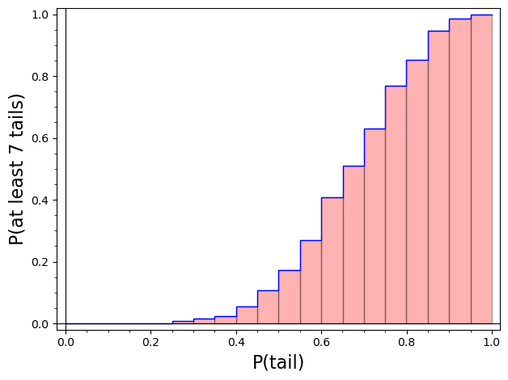
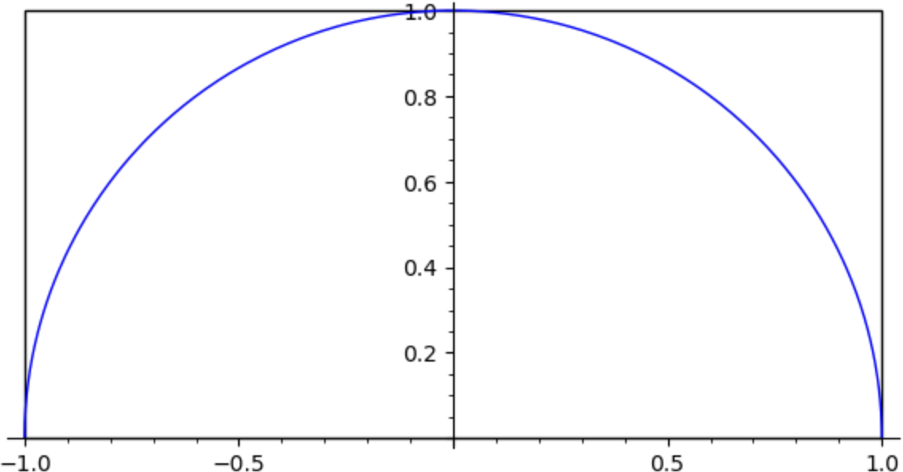

Section 9.2 Basic Examples
In this section we illustrate some of the basic concepts involved with a Monte Carlo simulation with three different examples.
Example 9.2.1. Flipping a Coin.
Here we approximate the probability of getting at least 7 tails when a coin is flipped 10 times. In the terminology of elementary probability theory, flipping a coin 10 times is a random experiment, and getting at least 7 tails is an event. One way of estimating the probability of an event is to perform the random experiment many times, each time is called a trial, and count the number of times the event occurred, called the number of successes. We then calculate
We apply this approach to estimate \(P(\text{at least 7 tails})\text{.}\)
Algorithm.
Simulate 10 random flips of a coin and determine the number of tails obtained. This is one trial.
Repeat for 1000 trials.
Calculate the number of trials in which at least 7 tails were obtained. This is the number of successes.
Calculate \(P(\text{at least 7 tails})\approx \dfrac{\text{Number of successes}}{1000}\text{.}\)
To implement this algorithm in SageMath, we will make use of the Python command randrange(2), which will select 0 or 1 with equal probability. An output of 1 indicates a Tail and a 0 indicates a Head.
We can execute the cell below several times and get different answers based on the output of the randrange(2) command. Execute the following cell several times.
One benefit of a simulation like this is that we can easily modify it to consider different what-if scenarios. For instance, what if we use a biased coin where the probability of a tail on a single flip is different than 0.5? Suppose our coin only has a probability of 0.4 of turning up with a Tail. We can modify our SageMath code to use the random( ) command, which generates a pseudo-random number between 0 and 1, as follows:
We can also make this subroutine work for any value of \(P\)(tail) by making TailProb a required input for the subroutine. We can also create a graph of the results (see Figure 9.2.2 for an example) and a table of estimates for \(P\)(at least 7 tails) for different values of \(P\)(tail).

Example 9.2.3. Area Under a Curve.
Here we construct a probabilistic model of a deterministic system. Specifically, we use a simulation to estimate the area under the curve \(y=\sqrt{1-x^2}\) over the interval \([-1,1]\text{.}\) This curve forms the top-half of a circle with radius 1, so the area under the curve is exactly \(\pi/2\text{.}\) This simulation could be seen as a way of estimating the value of \(\pi\text{.}\)
A graph of the curve is shown in Figure 9.2.4 along with a rectangle of height \(h = 1\) and width \(w = 2\) drawn around it.

In the simulation, we randomly pick points inside the rectangle and determine if each one is above or below the curve. We then estimate the area under the curve using the relationship
or equivalently,
Algorithm.
Randomly pick 200 points inside the rectangle.
Determine if each point lies under the curve.
Count the number of points under the curve.
Use (9.2.1) to estimate the area under the curve. This is one trial.
Repeat for a total of 200 trials.
We can now implement the algorithm.
Re-execute the above cell several times and note the variation in the average.
Think of one trial as if we are playing paintball. We are assured of landing in the rectangle on each shot. If we hit under the curve, we get a red splat; if not, we get a blue splat. We basically compute the proportion of red splats we get from 200 shots and multiply that proportion by the area of the rectangle.
Note that the average value over 200 trials we got from the first code is generally closer to the actual answer \(\pi/2\approx 1.57\) than the single results we're getting from the single trials. The average also has less variation.
This example illustrates a very important point when analyzing results from simulations:
The more trials, the closer the average value is to the theoretical value.
The point is that if you want to estimate something with a simulation, you will get a more accurate estimate if you use many trials and take an average than if you use only a few trials. This concept is called the Law of Large Numbers.